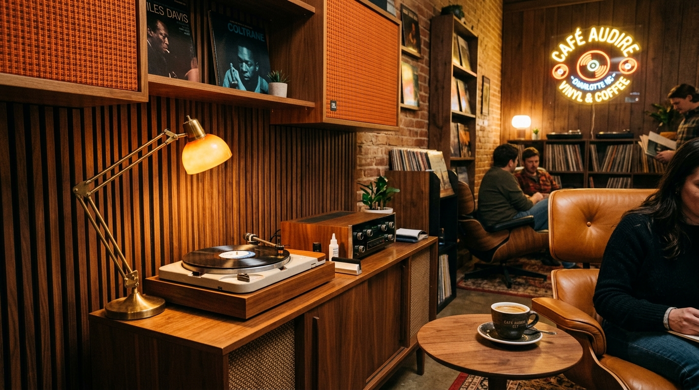

1. A5 Miyazaki Wagyu Sourcing
Imported directly from Miyazaki prefecture Japan, boasting BMS 10-12 snowflake marbling.
Japanese fusion gastronomy is defined by absolute ingredient purity & artistic presentation. At Lempira & LILA, our sushi chefs combine knife precision with global luxury accents—torching A5 Miyazaki beef over seasoned sushi rice & garnishing with Siberian caviar.

Imported directly from Miyazaki prefecture Japan, boasting BMS 10-12 snowflake marbling.
Sustainable sturgeon caviar providing a silky ocean pop to rich Wagyu & otoro nigiri.
Authentic Italian white truffle oil & shaved truffles paired with hamachi crudo & tuna tartare.